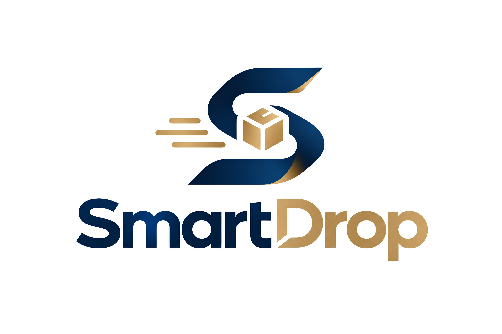

SmartDrop
Geleceğin Akıllı Lojistik Ağını
Bugün İnşa Ediyoruz
SmartDrop Hakkında
Günümüz e-ticaret dünyasında yaşanan en büyük operational verimsizliklerden biri, son mil (last-mile) teslimatlarındaki belirsizlikler ve başarısız teslimat denemeleridir. Geliştirdiğimiz akıllı kargo ve teslimat yönetim platformu; tüm kargo takip süreçlerini tek bir çatı altında toplarken, teslimat öncesi sunduğu canlı teyit mekanizması ile lojistik sektörüne yenilikçi bir boyut kazandırıyor. Dağıtımdan 24 saat önce kullanıcıya ulaşıp teslimat durumunu doğrulayarak; kargo firmalarının yakıt, zaman ve operasyonel maliyetlerini minimuma indiriyor, karbon ayak izini azaltıyor ve alıcılara %100 kontrol sağlayan esnek bir teslimat deneyimi sunuyoruz. Sürdürülebilir, verimli ve kullanıcı odaklı bir lojistik ekosistemi için teknolojiyi süreç yeniliğiyle birleştiriyoruz.
Misyonumuz
Son mil lojistiğindeki iletişim kopukluğunu ortadan kaldırarak; kargo firmaları için operasyonel maliyetleri düşüren, alıcılar için ise teslimat süreçlerini zahmetsiz ve esnek hale getiren akıllı bir yönlendirme platformu sunmak.
Vizyonumuz
Yapay zeka ve dinamik rota optimizasyon desteğiyle, gereksiz kargo seferlerinin sıfırlandığı, doğa dostu ve %100 ilk seferde teslimat başarısına ulaşan küresel bir dijital lojistik standardı oluşturmak.
Neler Sunuyoruz?
Konsolide Takip
Tüm kargo şirketlerini tek bir panelden anlık izleme olanağı.
Akıllı Teyit
Teslimat gününden önce "Evde misiniz?" bildirimi ile boşa seferlerin önlenmesi.
Dinamik Rota ve Esneklik
Komşuya bırakma, tarihi erteleme veya alternatif noktaya yönlendirme seçenekleri.